Точное место
Подбираем размер под вашу стену, нишу или мебель.
ЧАСТНАЯ МАСТЕРСКАЯ ЗЕРКАЛ · ПО ВАШИМ РАЗМЕРАМ
Зеркала с подсветкой и без неё для ванной, прихожей и вашего дома. Выберите форму, размер и детали — мы изготовим зеркало под ваше пространство.
Визуализация показывает характер света и оттенка. Точную комплектацию и цену выберите в калькуляторе ниже.
ФОРМА · СВЕТ · ОТРАЖЕНИЕ
Правильный размер и форма меняют впечатление от комнаты. Подсветка добавляет мягкий свет; зеркало без неё оставляет чистую архитектурную линию.
Подбираем размер под вашу стену, нишу или мебель.
Контурная подсветка с выбором тёплого, дневного или холодного света.
Шлифовка, полировка и доступные варианты отделки.
НАШИ РАБОТЫ
От компактного круга для ванной до полотна в полный рост. Посмотрите формы и свет на реальных примерах.
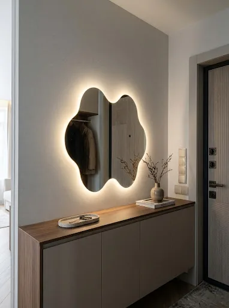
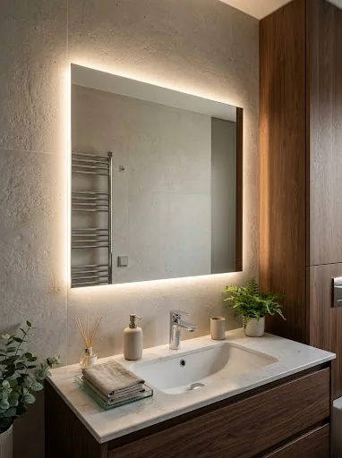


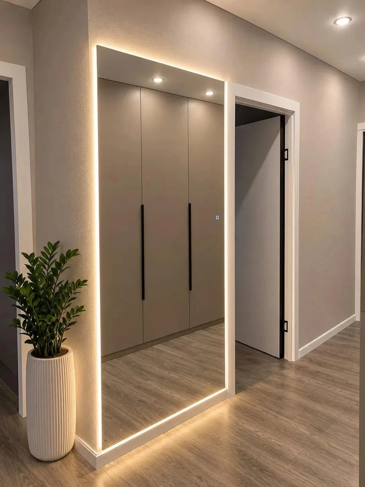
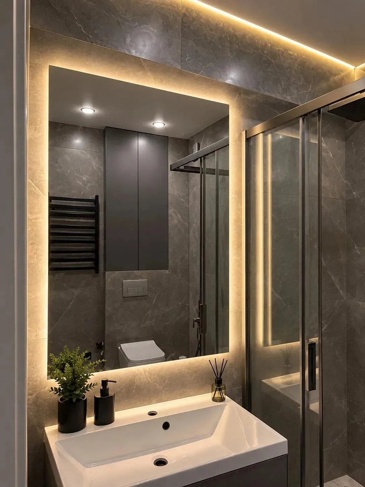


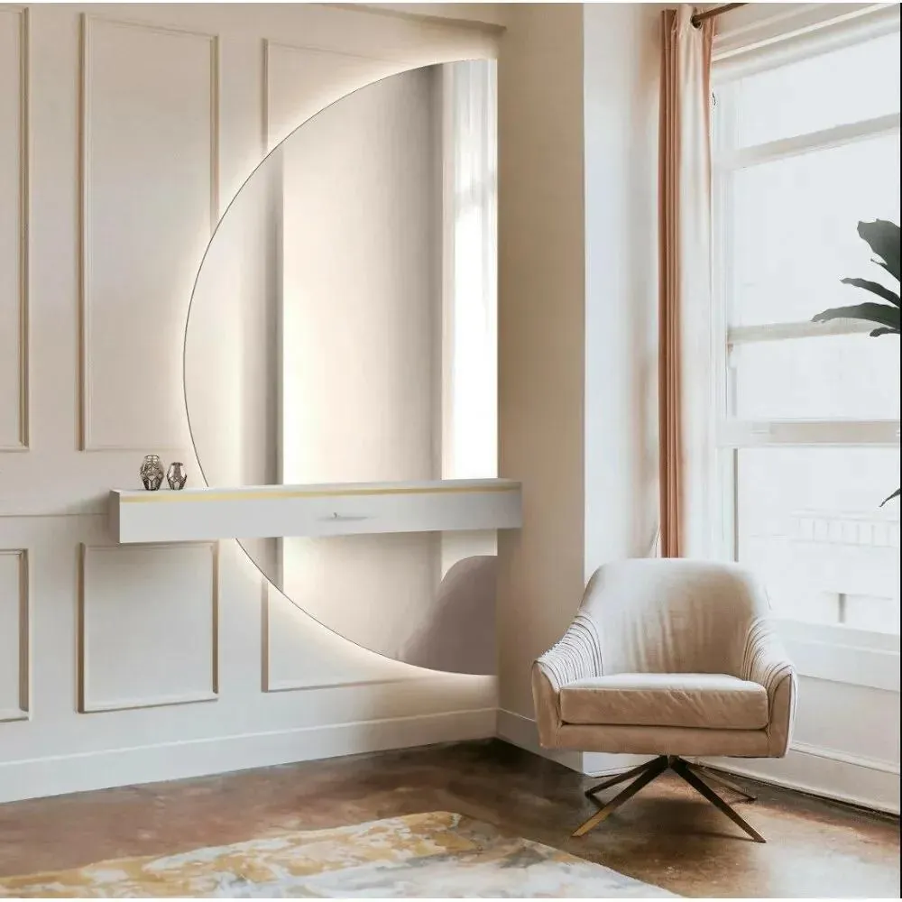
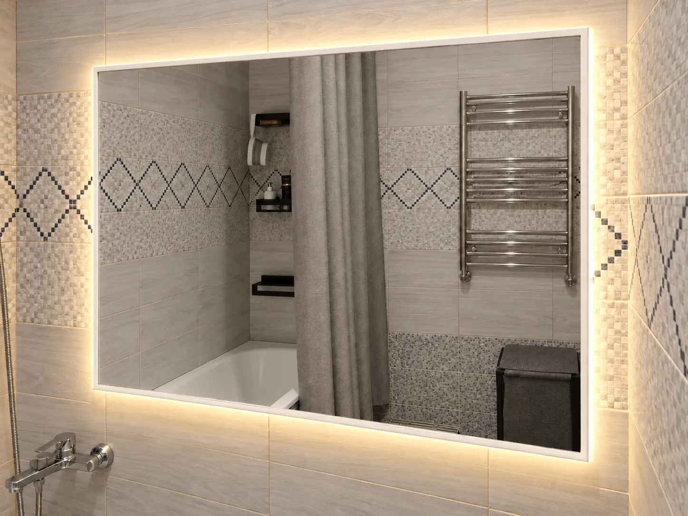


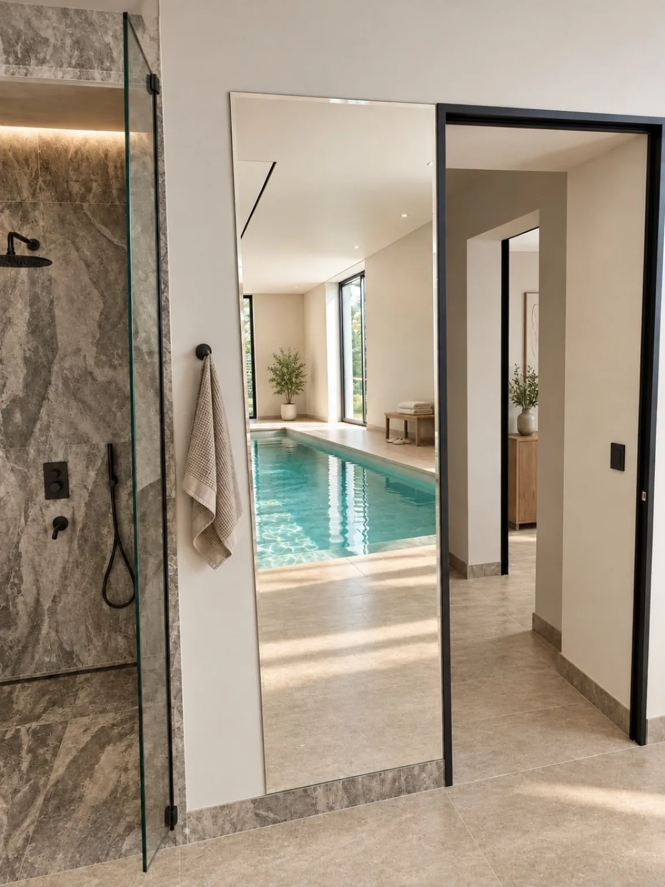


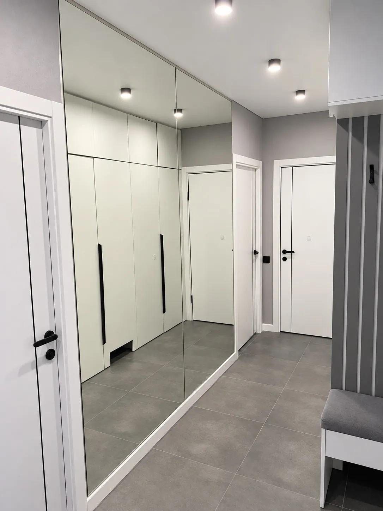


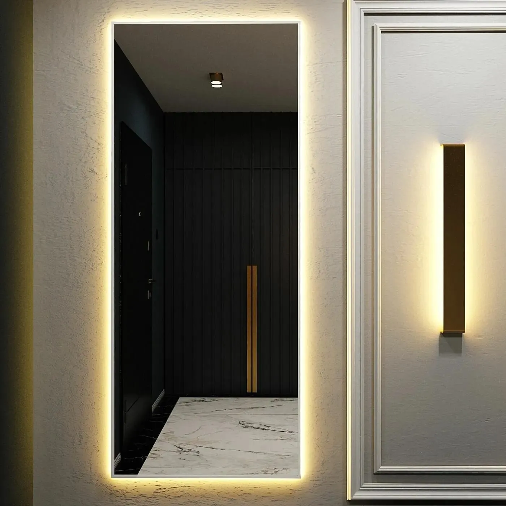


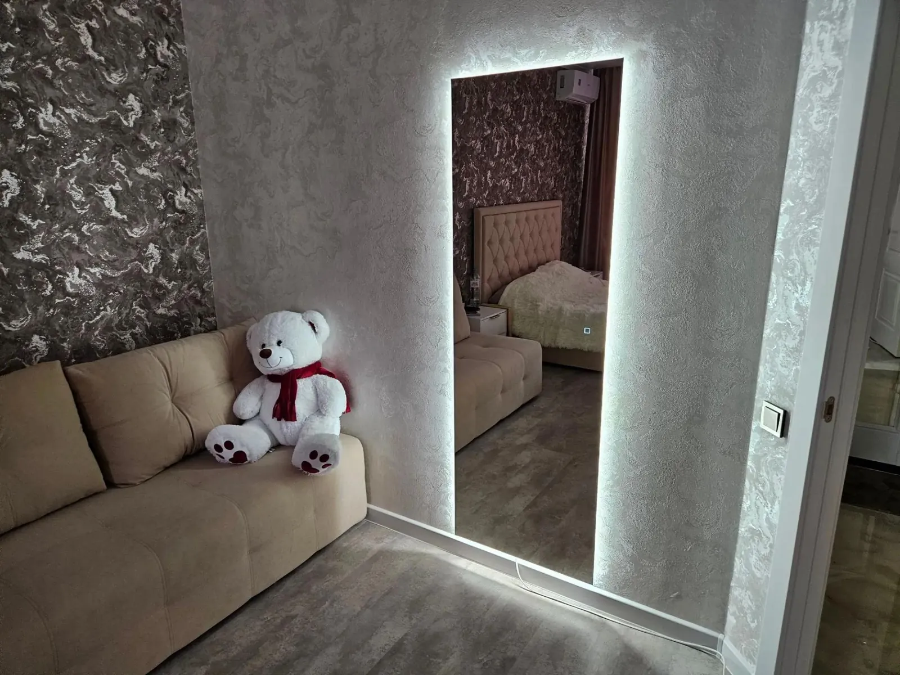

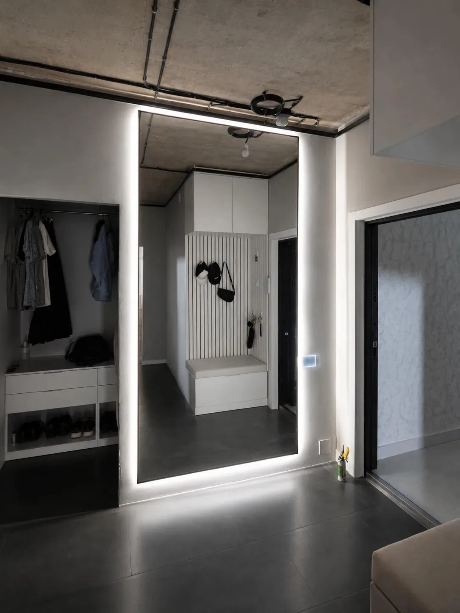
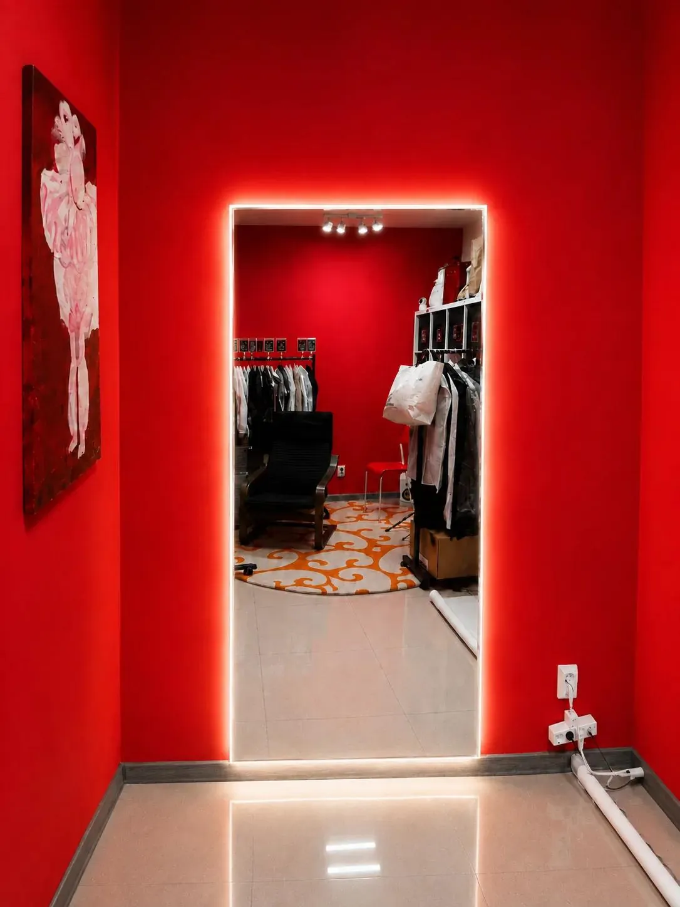
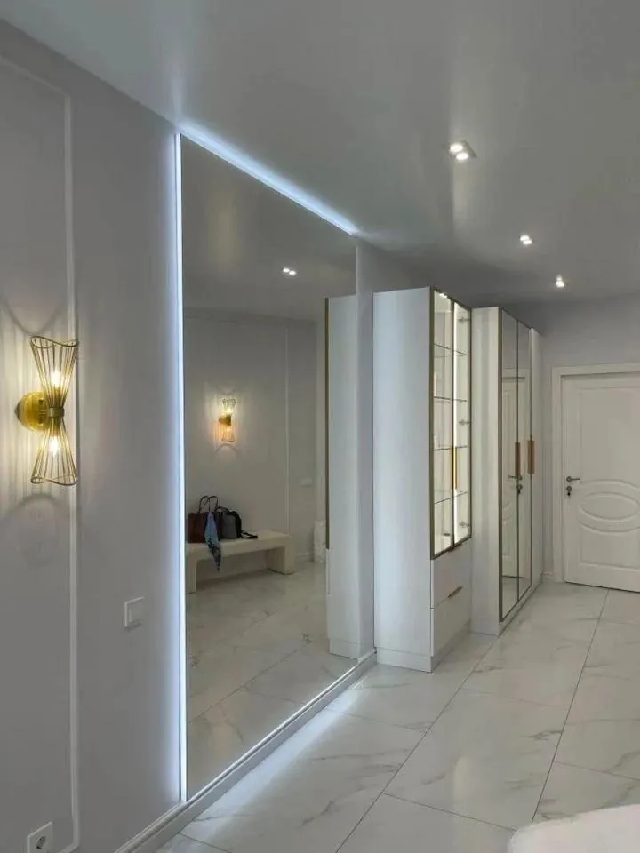

ДВА ХАРАКТЕРА ОДНОГО ЗЕРКАЛА
Оба варианта можно рассчитать ниже. Выбор зависит от комнаты и того, как вы будете пользоваться зеркалом.
Мягкий свет вокруг полотна добавляет глубину и делает зеркало выразительной частью интерьера.
Рассчитать с подсветкой ↗Чистая геометрия отражает естественный свет и не требует подключения к электросети.
Рассчитать без подсветки ↗ВАШЕ ЗЕРКАЛО · ВАШ РАСЧЁТ
Выберите форму, размеры и комплектацию. Итог рассчитывает действующий калькулятор Зеркало Pro по актуальным ценам Санкт-Петербурга.
ОТ ИДЕИ ДО УСТАНОВКИ
Задайте параметры в калькуляторе или пришлите эскиз.
Уточним детали, стоимость и условия работы.
Подготовим зеркало в выбранной комплектации.
Согласуем адрес, подъём и способ установки.
НАЧНЁМ С ВАШЕЙ ИДЕИ
Напишите размеры, пришлите фотографию места установки или позвоните. Работаем в Санкт-Петербурге и Мурино.
+7 (934) 029-85-28